Carolina Nobre
HDSI Postdoctoral Fellow
Contact
cnobre@g.harvard.edu
Harvard John A. Paulson School of Engineering and Applied Sciences
150 Western Ave, Room 2419
Boston, MA, 02134
Curriculum Vitae
Google Scholar
Twitter
GitHub
Bio
I am a Postdoctoral Fellow with Hanspeter Pfister's Visual Computing Group at the School of Engineering and Applied Sciences at Harvard University. My current research projects focus on how viewers make sense of and establish trust in visualizations.
Before joining Harvard University, I received my PhD with Alex Lex at the Visualization Design Lab at the Scientific Computing and Imaging Institute and the School of Computing at the University of Utah. I have a master’s degree in software engineering from the Harvard Extension School, as well as a previous life as an oceanographer studying the Arctic Ocean and its effect on our planet.
I am the receipient of the Harvard Data Science Inititative Fellowship, as well as a 2020 Wojcicki Troper Fellow. I also received a VGTC Outstanding Dissertation Honorable Mention for my PhD Dissertation on Visualizing Multivariate Networks.
Research Overview
I am data visualization designer and researcher. My research focuses on multivariate network visualizations and investigating how visual literacy can be captured and increased via provenance analysis and experiential learning approaches. Most recently I was awarded an HDSI research grant to investigate the mechanisms by which visualization can promote trust in science
Teaching
Information Design and Visual Analytics | INSH 5302 (Northeastern University)
Lead Faculty Spring 2022
Class Syllabus
Data Visualization | ISYS6645 (Boston College)
Lead Faculty Fall 2021, Spring 2022
Class Syllabus
Data Visualization | CS 171 (Harvard)
Teaching Fellow Fall 2020, Fall 2021
http://www.cs171.org
Topics in Data Visualization | CS 271 (Harvard)
Teaching Fellow Spring 2021
https://cs-271.github.io/
Visualization for Data Science | CS 6630 (University of Utah)
Teaching Fellow Fall 2017, Fall 2018
https://www.dataviscourse.net
Publications
|
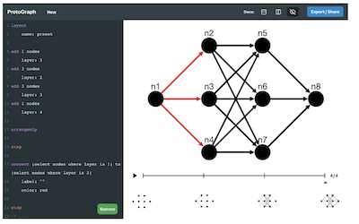
|
Protograph: An Approachable and Extensible Toolkit for Graph Visualization and Animation
Preprint, 2021
|
|
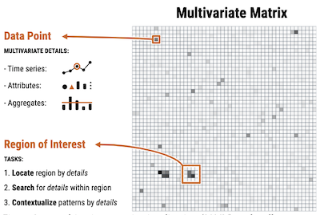
|
The Pattern is in the Details: An Evaluation of Interaction Techniques for Locating, Searching, and Contextualizing Details in
Multivariate Matrix Visualizations
Preprint, 2021
|
|
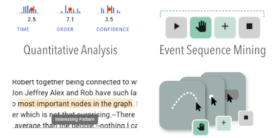
|
reVISit: Looking Under the Hood of Interactive Visualization Studies
2021 CHI Conference on Human Factors in Computing Systems (pp. 1-13). 2021
|
|
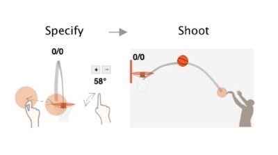
|
Towards an Understanding of Situated AR Visualization for Basketball Free-Throw Training
2021 CHI Conference on Human Factors in Computing Systems, 2021
|
|
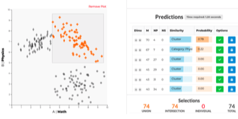
|
Predicting Intent Behind Selections in Scatterplot Visualizations
Information Visualization, 20(4): 207–228, doi:10.1177/14738716211038604, 2021.
|
|
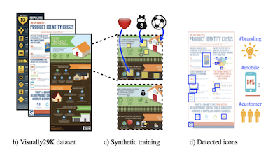
|
Parsing and Summarizing Infographics with Synthetically Trained Icon Detection
2021 IEEE 14th Pacific Visualization Symposium (PacificVis), 2021
|
|
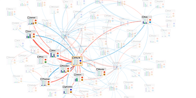
|
Evaluating Interactive Multivariate Network Visualization Techniques using a Validated
Design and Crowd-Sourcing Approach
2020 CHI Conference on Human Factors in Computing Systems, pp. 1-12. 2020
|
|
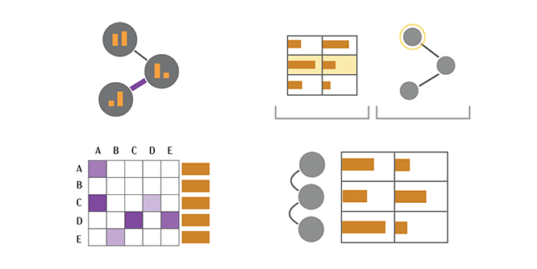
|
The State of the Art in Visualizing Multivariate Networks
Computer Graphics Forum (EuroVis ’19), 38: 807-832, doi:10.1111/cgf.13728, 2019
|
|
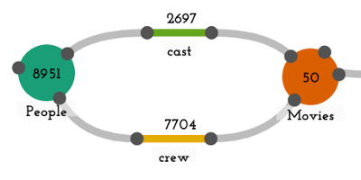
|
Origraph: Interactive Network Wrangling
2019 IEEE Conference on Visual Analytics Science and Technology (VAST), pp. 81-92.
IEEE, 2019
|
|
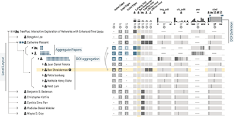
|
Juniper: A Tree+Table Approach to Multivariate Graph Visualization
IEEE Transactions on Visualization and Computer Graphics (InfoVis ’18), 25(1):
544-554, doi:10.1109/TVCG.2018.2865149, 2019
|
|
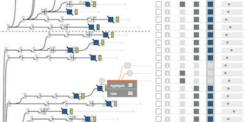
|
Lineage: Visualizing Multivariate Clinical Data in Genealogy Graphs
IEEE Transactions on Visualization and Computer Graphics, 25(3): 1543-1558, doi:10.1109/TVCG.2018.2811488, 2019
|
|
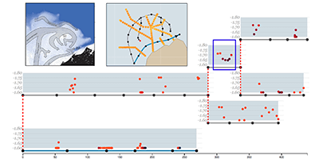
|
OceanPaths: Visualizing Multivariate Oceanography Data
Proceedings of the Eurographics Conference on Visualization (EuroVis ’15) - Short Papers, doi:10.2312/eurovisshort.20151124, 2015
|